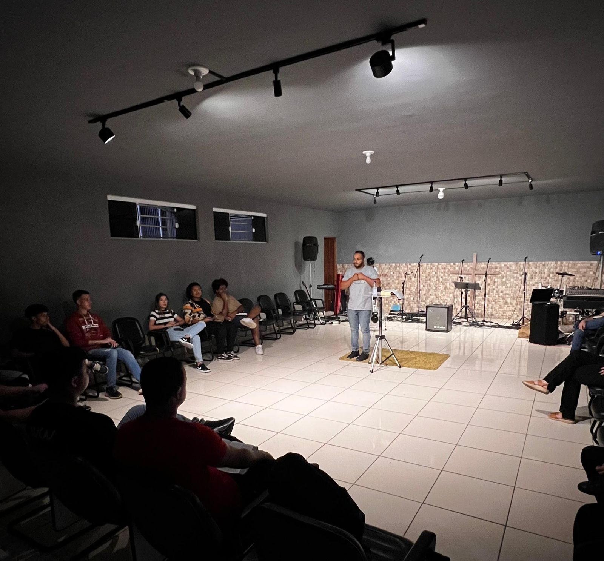
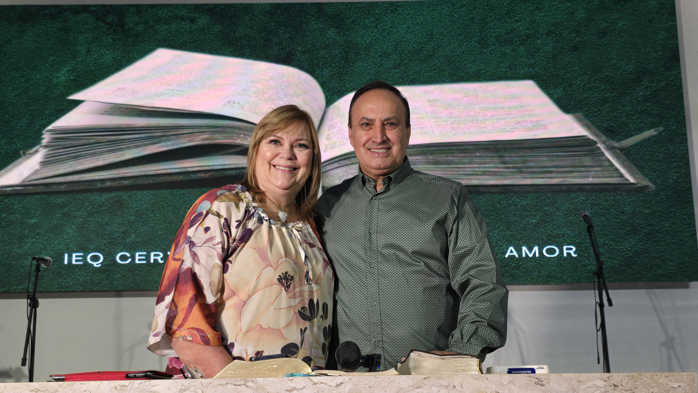

Quarta-feira
Derramar do Espírito Santo
19h30 · Rua M22, Nº 518, Jd. Cervezão
Desde 1998 em Rio Claro, SP
"Jesus Cristo é o mesmo ontem, hoje e eternamente." — Hebreus 13:8
A Igreja do Evangelho Quadrangular nasceu com a missão de proclamar Jesus Cristo, o Filho de Deus, como o Salvador, o Batizador com o Espírito Santo, o Médico dos médicos e o Rei que há de vir.
Desde 1998, estamos no coração do Jardim Cervezão, anunciando essa verdade transformadora e formando discípulos e líderes cristãos por meio do ensino sólido da Palavra de Deus.
Somos uma família de fé, dedicada a viver e compartilhar o amor de Deus, acolhendo todas as pessoas e proclamando com ousadia que Jesus Cristo é o mesmo ontem, hoje e eternamente.
Você é muito bem-vindo! Confira os dias e horários dos nossos cultos.
19h30 · Rua M22, Nº 518, Jd. Cervezão
19h30 · Rua M22, Nº 518, Jd. Cervezão

19h00 · Rua M22, Nº 518, Jd. Cervezão

8h00 · Rua M9, Nº 423, Jd. Cervezão
19h00 · Rua M22, Nº 518, Jd. Cervezão
Uma mulher cuja visão de amor e compaixão orienta-nos em nossa jornada de fé no Evangelho. Sua dedicação e sabedoria são uma inspiração para toda a comunidade.
Regina Rosales
Pastora da IEQ Cervezão
Um homem dedicado, apaixonado pelo Evangelho, que ajudou nossa igreja a crescer e fortalecer-se ao longo dos anos, trazendo inspiração e renovação a todos que o ouvem.
Valter Rosales
Pastor da IEQ Cervezão
Rua M22, Nº 518, Jardim Cervezão — Rio Claro, SP
Sua contribuição é uma semente plantada no Reino de Deus. Escolha a forma mais conveniente para você.
Use a chave de CNPJ:
62.955.505/8651-41
Contribua em espécie utilizando os envelopes de Dízimos e Ofertas ao participar de um de nossos cultos presenciais.